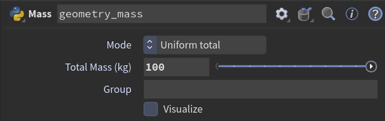

Quick start: Houdini users
You know Houdini. You have not made an Arma model before.
First the Arma side in a few paragraphs, then the two jobs: a new model, and a change to an existing model. The steps are short. The quick start for Arma modders has the same jobs with more detail about the Houdini window. Install the add-on first: Install.
Steps that need the Houdini window (shelf buttons and dialogs) are marked Houdini window. Steps in other programs are marked Outside Houdini. All other steps were run in Houdini without a window and gave the messages quoted here.
What you need to know about Arma models
- P3D
- The model file of Arma 3, with the ending
.p3d. You make it with the game's tool, Object Builder, or with this add-on. A file can hold several models of one object. The game picks the right one at run time. - LOD
- "Level of detail": one of those models inside a P3D. It has a type and, for some types, a
resolution number. The types you need first:
- Resolution: what the player sees. Resolution 1 is the most detailed. Higher numbers are simpler versions for longer distances.
- Geometry: the collision shape, made of convex pieces, with the mass of the object.
- Memory: named points that the game and its scripts look up, such as a muzzle position or the axis of a door.
- Fire Geometry and View Geometry: hit zones for bullets and occlusion for the AI.
- Shadow Volume: the shape used for shadows.
- Selection
- A named set of points (and faces) in a LOD. Animation, hit zones and memory points are all selections. In Houdini
they are point groups. Names can hold characters that Houdini does not allow in a group name, so the add-on stores such
a name as a reversible code starting with
xn__. The Selection browser shows the real name. See Concepts. - Proxy
- A place where the game puts another model, such as a weapon slot or a seat. It is a path to another .p3d and an index. In Houdini it is a small packed primitive with a path and an index. See Concepts.
- Mass
- A weight in kilograms for each point of the Geometry LOD. The game adds the points up. The Mass node sets it.
- P drive and project root
- Arma tools keep source files on a virtual drive, P:. Paths inside a finished P3D are relative to it, so a
texture at
P:\my_mod\data\crate_co.paais stored asmy_mod\data\crate_co.paa. The add-on calls the start of the path the project root (defaultP:\). Set it with the Project root and presets shelf tool or on the export node. Files in a HEMTT project or next to a$PBOPREFIX$file get their game path from that instead. See Concepts. - Rules of the format
- A polygon has 3 or 4 points. A Geometry LOD should be triangles and have at least one point group named
component01(more for more convex pieces; the Components node makes them) and a mass. Y is up. The importer negates Z and reverses polygon winding so that the model looks the same as in Object Builder.
How the add-on is built
There are two shapes of geometry, and each A3OB node takes one of them.
- P3D geometry: one packed primitive for each LOD (the primitive attribute
namesays which). P3D Import and Assemble LODs output it. - LOD geometry: one LOD as ordinary unpacked geometry, with its LOD data in detail attributes
(
a3ob_lod_type,a3ob_lod_resolutionand others). Extract LOD makes it, and you edit it with any nodes.
The reason: a Merge of unpacked LODs keeps only the detail attributes of its first input. Packed primitives keep theirs. So always put edited LODs back with Assemble LODs, never with a Merge. The page Concepts has the whole picture.
The network for an existing file:
- P3D Import
- Extract LOD
- Your edits
- Assemble LODs
- P3D Export
and the base input of Assemble LODs takes the import directly, so LODs you did not edit pass through as they are.
The A3OB nodes are Python-type digital assets. Their parameters and defaults are in the reference. Click the ? (help) icon at the top right of the parameter pane of a node (or press F1 over the node) to open Houdini's help for it, which names the full reference page by its path. Do not edit an A3OB asset in the Type Properties window: the node files are written by a script, and an edit is lost on the next update.
Job 1: a new model
Click New P3D on the A3OB shelf. If you are inside a SOP network it asks Build the starter network in that network or a new object, with the buttons This network and New object. For a new object it asks Name of the new Geometry object. The status line ends with Built the starter network in and the path.
The same from Python:
from a3ob_houdini import new_p3d made = new_p3d.build_starter(None, "my_crate") # a new /obj/my_crate made.nodes["export"] # the nodes by name- The network has three LOD chains that meet in
assemble, thenexport:
The nodes
*_propsare LOD Properties,assembleis Assemble LODs with no base input andexportis P3D Export with the display flag. The network already passes every check: 3 LODs, 3 KB if saved now. - Replace
res1_mesh,geometry_meshandmemory_pointswith your own geometry. Keep to the rules above (3 or 4 points a polygon, triangles and acomponent01group in the Geometry LOD). For a quick test, change the Size ofres1_mesh. Set the real weight ongeometry_mass: its Mode is Uniform total and its message is Total 100.0 kg on 8 points.![The starter network after res1_mesh is replaced. Left column: my_model (Sphere) into place_on_ground (Transform) into res1_props (LOD Properties). Middle column: geometry_mesh (Box) into geometry_triangles (Divide) into geometry_components (Group) into geometry_mass (Mass) into geometry_props (LOD Properties). Right column: memory_points (Add) into memory_group (Group) into memory_props (LOD Properties). The three props nodes each connect to one input of assemble (Assemble LODs), which connects to export (P3D Export).](img/replace-mesh-network.png)

- Add a Validate node after
assemble: 3 LODs checked: 0 errors, 0 warnings. Bypassgeometry_massto see a note, Geometry: has no mass, and a warning, Geometry: the points have no mass. Give two LODs the same type and resolution to see an error, Geometry: another LOD has the same type and resolution. The meaning of the checks is on Concepts. - Set Output File on
exportand press Save to Disk. The message is Saved 3 LODs, 3 KB to and the file name. Nothing is written while the node only cooks. From Python, which raises an error when nothing was written:from a3ob_houdini.nodes import p3d_export p3d_export.save(hou.node("/obj/my_crate/export")) Open the file in Object Builder (File, then Open). Object Builder is not part of this add-on, so this step is not checked by the tests.
Pick the options before you save. The Preset menu has Lossless (write exactly what is there) and Arma 3 release (what Object Builder does by default: lowercase, relative paths and so on). Pick one and press Apply. Concepts lists the options.
Job 2: change an existing model
The example is the crate in tests/fixtures/p3d/sample_2_crate.p3d in the add-on folder.
- Add a P3D Import node and set its File: 7 LODs, 0 packed proxies, 0 inline proxies. The LODs parameter can limit which LODs are read, but then the others are missing from the P3D geometry and from an export of it.
- Add Extract LOD and pick a LOD in its LOD menu. The entries are 0: Resolution 1, 1: Resolution 2, 2: Shadow Volume 0, 3: Geometry, 4: Geometry Buoyancy, 5: Memory and 6: Roadway. With 3: Geometry the message is Extracted LOD 3: Geometry, 16 points, 24 polygons. A non-P3D input gives Input is not a P3D geometry (packed LODs). Connect P3D Import or Assemble LODs.
- Edit as you like. For example, a Mass node with Uniform total and Total Mass (kg) 90: Total 90.0 kg on 16 points. The LOD data stays on the geometry as long as the nodes you use keep detail attributes.
- Add Assemble LODs. Input 1 is the import (the base), input 2 is your branch. With Replace Matching LODs on, the edited LOD replaces the base LOD with the same stored signature and keeps its place: 1 replaced, 6 passed through, 0 added.
- Add P3D Export, set the Output File and press Save to Disk: Saved 7 LODs, 50 KB to and the file name. The crate's Roadway LOD gives a warning that contains has no sound texture; it does not stop the save.
Import then export with no edit and the Lossless preset gives a file that is identical byte for byte. See Concepts for when that holds.
Other shelf tools
- Quick ExportWrite a .p3d from the selected node with a preset, without a P3D Export node.
- Batch folder convertRe-write a whole folder of .p3d files and report which came back identical.
- Project root and presetsSet the project root and manage export presets.
- Selection browserShow selections by their real names.
- Reload A3OBLoad updated code without restarting Houdini.